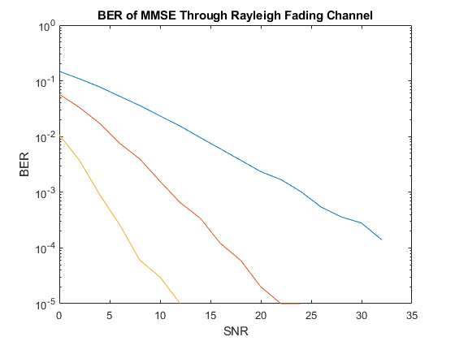
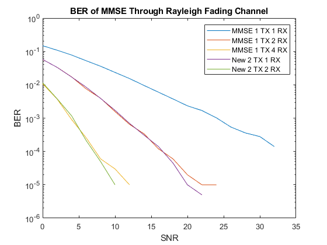

Contents
clear;close all;clc
nSym = 1000;
numIter = 100;
SNR_Vec = 0:2:32;
lenSNR = length(SNR_Vec);
M = 2;
ber = zeros(3, lenSNR);
berVec1 = zeros(numIter, lenSNR);
rxNumcount = 1;
for rxNum = [1, 2, 4]
for i = 1:numIter
bits1 = randi([0 1], 1, nSym*log2(M));
bitLen = length(bits1);
msg1 = zeros(1, bitLen/log2(M));
msgindex = 1;
for bitindex = 1:log2(M):(bitLen)
msg1(msgindex) = bi2de(bits1(bitindex:bitindex+log2(M)-1), 'left-msb');
msgindex = msgindex+1;
end
h = zeros(rxNum, length(msg1));
for hindex = 1:rxNum
h(hindex,:) = (1/sqrt(2))*(randn(1,length(msg1)) + 1j*randn(1,length(msg1)));
end
for j = 1:lenSNR
s0 = qammod(msg1,M);
r = zeros(rxNum, length(msg1));
s0tilda = zeros(1,length(msg1));
for rindex = 1:rxNum
r(rindex,:) = awgn(h(rindex,:).*s0, SNR_Vec(j)+ 10*log10(log2(M)));
s0tilda = s0tilda + conj(h(rindex,:)).*r(rindex,:);
end
rxDemod1 = qamdemod(s0tilda,M);
rxMSG1 = zeros(1, bitLen);
rxMSGindex = 1;
for rxDemindex = 1:1:length(rxDemod1)
rxMSG1(rxMSGindex:rxMSGindex+log2(M)-1) = de2bi(rxDemod1(rxDemindex), log2(M), 2, 'left-msb');
rxMSGindex = rxMSGindex + log2(M);
end
[~, berVec1(i,j)] = biterr(bits1(1:end), rxMSG1(1:end));
end
end
ber(rxNumcount,:) = mean(berVec1,1);
rxNumcount = rxNumcount+1;
end
figure;
semilogy(SNR_Vec, ber(1,:));
for i = 2:rxNumcount-1
hold on
semilogy(SNR_Vec, ber(i,:));
end
title('BER of MMSE Through Rayleigh Fading Channel');
xlabel('SNR');
ylabel('BER');

This part is for the new scheme
nSym = 1000;
numIter = 100;
SNR_Vec = 0:2:32;
lenSNR = length(SNR_Vec);
M = 2;
ber1 = zeros(2, lenSNR);
ber2 = zeros(2, lenSNR);
berVec1 = zeros(numIter, lenSNR);
berVec2 = zeros(numIter, lenSNR);
rxNumcount = 1;
for rxNum = [1, 2]
for i = 1:numIter
bits1 = randi([0 1], 1, nSym*log2(M));
bits2 = randi([0 1], 1, nSym*log2(M));
bitLen = length(bits1);
msg1 = zeros(1, bitLen/log2(M));
msg2 = zeros(1, bitLen/log2(M));
msgindex = 1;
for bitindex = 1:log2(M):(bitLen)
msg1(msgindex) = bi2de(bits1(bitindex:bitindex+log2(M)-1), 'left-msb');
msg2(msgindex) = bi2de(bits2(bitindex:bitindex+log2(M)-1), 'left-msb');
msgindex = msgindex+1;
end
h = zeros(2*rxNum, length(msg1));
for hindex = 1:2*rxNum
h(hindex,:) = (1/sqrt(2))*(randn(1,length(msg1)) + 1j*randn(1,length(msg1)));
end
for j = 1:lenSNR
s0 = qammod(msg1,M);
s1 = qammod(msg2,M);
r = zeros(2*rxNum, length(msg1));
s0tilda = zeros(1,length(msg1));
s1tilda = zeros(1,length(msg1));
for rindex = 1:2:2*rxNum
r(rindex,:) = awgn(h(rindex,:).*s0 + h(rindex+1,:).*s1, SNR_Vec(j)+ 10*log10(log2(M)));
r(rindex+1,:) = awgn(-h(rindex,:).*conj(s1) + h(rindex+1,:).*conj(s0), SNR_Vec(j)+ 10*log10(log2(M)));
s0tilda = s0tilda + conj(h(rindex,:)).*r(rindex,:) + h(rindex+1,:).*conj(r(rindex+1,:));
s1tilda = s1tilda + conj(h(rindex+1,:)).*r(rindex,:) - h(rindex,:).*conj(r(rindex+1,:));
end
rxDemod1 = qamdemod(s0tilda,M);
rxDemod2 = qamdemod(s1tilda,M);
rxMSG1 = zeros(1, bitLen);
rxMSG2 = zeros(1, bitLen);
rxMSGindex = 1;
for rxDemindex = 1:1:length(rxDemod1)
rxMSG1(rxMSGindex:rxMSGindex+log2(M)-1) = de2bi(rxDemod1(rxDemindex), log2(M), 2, 'left-msb');
rxMSG2(rxMSGindex:rxMSGindex+log2(M)-1) = de2bi(rxDemod2(rxDemindex), log2(M), 2, 'left-msb');
rxMSGindex = rxMSGindex + log2(M);
end
[~, berVec1(i,j)] = biterr(bits1(1:end), rxMSG1(1:end));
[~, berVec2(i,j)] = biterr(bits2(1:end), rxMSG2(1:end));
end
end
ber1(rxNumcount,:) = mean(berVec1,1);
ber2(rxNumcount,:) = mean(berVec2,1);
rxNumcount = rxNumcount+1;
end
beravg = (ber1 + ber2)/2;
hold on
semilogy(SNR_Vec, beravg(1,:));
hold on
semilogy(SNR_Vec, beravg(2,:));
legend("MMSE 1 TX 1 RX", "MMSE 1 TX 2 RX", "MMSE 1 TX 4 RX", "New 2 TX 1 RX", "New 2 TX 2 RX");
